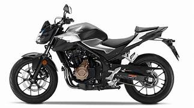

Honda CB 500F Vale a Pena em 2026?

Introdução à Honda CB 500F
A Honda CB 500F é uma moto naked intermediária que atrai pilotos por sua versatilidade e equilíbrio. Em 2026, com atualizações como painel TFT e freios ABS duplo, muitos questionam: Honda CB 500F vale a pena? Sim, para uso urbano e viagens médias, ela oferece performance acessível sem exageros. Parte da família 500 (com CBR 500R e CB 500X), compete com Yamaha MT-03 e Kawasaki Z400, destacando-se pelo motor bicilíndrico de 471 cc com injeção eletrônica PGM-FI.
Entrega 50,4 cv de potência e torque de 4,55 kgfm, ideal para acelerações em cidades e estradas, com transmissão de 6 marchas e embreagem deslizante para trocas suaves.
Preço da Honda CB 500F em 2026
O preço sugerido da Honda CB 500F 2026 é R$ 35.000 (sem frete), variando para R$ 36.000 com impostos em diferentes regiões. Comparada a usadas (R$ 28.000-32.000), a nova vale pela garantia de 3 anos e features como assistente de embreagem. Para quem busca naked intermediária, Honda CB 500F vale a pena 2026 pelo custo-benefício, com depreciação baixa (~10% anual) graças à revenda forte da Honda.
Inclui rodas de 17", tanque de 16,7 litros e peso de 189 kg, facilitando manobras em tráfego.
Consumo e Desempenho no Dia a Dia
O consumo médio é de 25-30 km/l na cidade, alcançando 35 km/l em estradas, graças ao motor paralelo twin e eficiência. Isso faz Honda CB 500F vale a pena para economia, com autonomia de ~500 km. Velocidade máxima ~160 km/h, com aceleração de 0-100 km/h em ~5s para ultrapassagens seguras. A suspensão (telescópica invertida dianteira e mono traseira ajustável) absorve irregularidades, enquanto os freios ABS duplo garantem parada precisa. Para garupa, o banco ergonômico e estribos oferecem conforto em trajetos longos.
Em uso misto, ela é versátil para commuting ou turismo, com vibrações mínimas em cruzeiro.
Manutenção e Custos Anuais da CB 500F
A manutenção é moderada: revisões a cada 6.000 km custam R$ 400-600 em autorizadas. Custos anuais (peças, óleo, pneus) ficam entre R$ 1.500-2.200 para 10.000 km. Peças como filtro de óleo (R$ 60) e pastilhas (R$ 200) são acessíveis, com rede ampla da Honda. Sem problemas crônicos, a durabilidade excede 100.000 km. Para entusiastas, Honda CB 500F vale a pena 2026 pelo custo, incluindo seguro ~R$ 1.000/ano.
- Prós: Equilíbrio potência/economia, ABS, conforto, durabilidade.
- Contras: Preço alto para iniciantes, consumo em alta rotação, sem quickshifter.
Comparação com Concorrentes em 2026
Vs. Yamaha MT-03 (R$ 34.000): A CB 500F vence em torque e conforto. Vs. Kawasaki Z400 (R$ 36.000): A Honda é mais acessível e com melhor rede. Para uso diário, a CB 500F se destaca pela versatilidade. Teste uma para sentir o motor DOHC refrigerado a líquido.
Conclusão: Honda CB 500F Vale a Pena?
Sim, a Honda CB 500F vale a pena em 2026 para quem quer moto equilibrada, com bom desempenho e economia. Ideal para cidades e estradas. Consulte concessionárias para promoções. (Baseado em análises 2026; valores aproximados.)
Outras Notícias
Motos que valem a pena até 25 mil reais